Home > Helpdesk

Tutorial
We have a number of sites where we use sub-contractors. The sub-contractors themselves may all be on various charge rates, yet we want everyone who works at this site to be paid $28.00 per hour (as an example).
|
|
Introduction
The way to achieve this in Powerforce is to set up a site specific rate at the site. In this manner, the pay class is driven by the act of working on the site.
To set this up use the Client Operations screen, on the Rates tab.
This tab has two sections:- on the LHS you have the "Permanent Auto Classification" setup & on the RHS you have the "Casual Auto Classification" setup. However, before going on, a quick explanation of the terms used here:
In Powerforce employment types are given a weighting which we call the FTE (full-time equivalent), in order to differentiate the ratio of hours worked in relation to a 'Fulltime Employee' that is set to an FTE of 1.0. Therefore any employment type defined which has an FTE value of 1.0 is considered for this LHS: 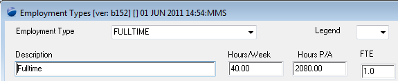
Conversely, the various employment types that refer to your "Casual" workforce are assigned an FTE value of less than 1.0. Generally 0.50 to represent working 1/2 as much as a fulltime employee. However, the number of hours has no bearing on this, only the setting of the FTE value to less than 1.0: 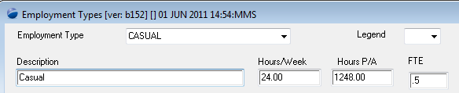
The manner in which the below configuration works is:
For every in-coming 'Grade' of employee (irrespective of the actual pay class), you map the grade to a new classification (in this example : TWENTY-8).
In the image below, we have mapped grades 1 - 4 to the classification twenty-8. if you have more grades, ensure that you map each grade to the new pay class. Grade comes from the classification code definition (as per image at Step 1 below).
We have also only (in this example) carried this mapping out for those employees ( be they real company employees or sub-contractors), whose employment type is "CASUAL".
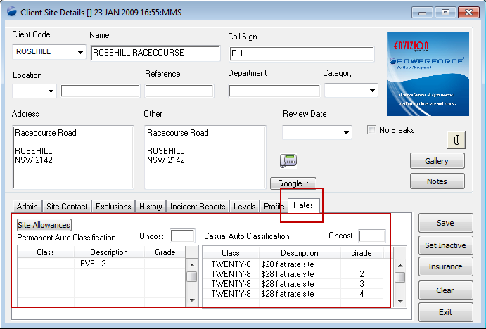
Top of Page
Step 1
You must first ensure that you have the target classification defined:
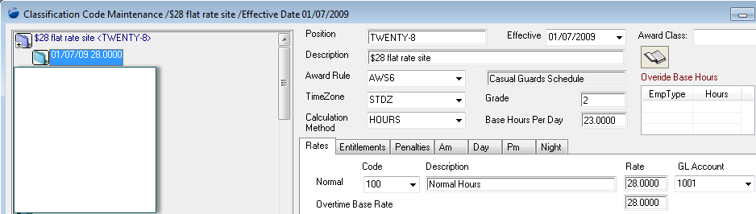
Top of Page
Testing the configuration
Create adhoc shifts, and verify the details of the shifts
- Open the scheduling workbench to the site at which you wish to create the adhoc shifts.
- Once the shifts have been created, double-click on a shift to confirm the shift requirements.
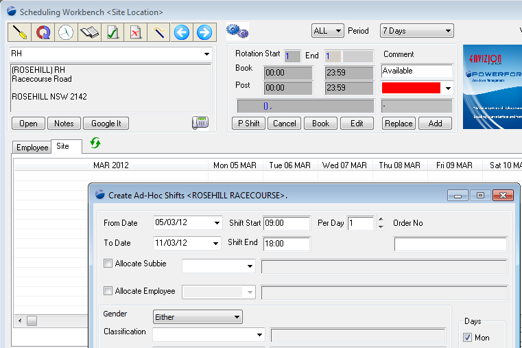
Open a shift to see its configuration. The point to take away is that there is no "Classification code" defined, which in this instance is exactly what you expect as there is no employee assigned to the shift (the time at which the classification is worked out).
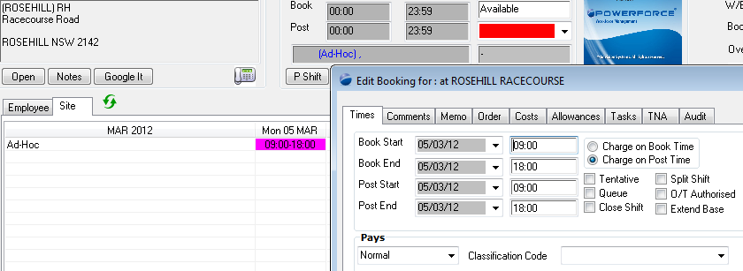
Top of Page
Add employees to the adhoc shifts.
With the shifts un-allocated, click on the "Ad-Hoc" text, and then the "Replace" button - this will throw up the "Replace Shifts" dialog which allows you assign an employee to more than 1 shift at a time (for shifts showing along that selected line).
In this example, we have carried this operation out twice - in the first instance allocating 4 of the shifts to one employee, and subsequently allocating the remaining 3 shifts to another employee.
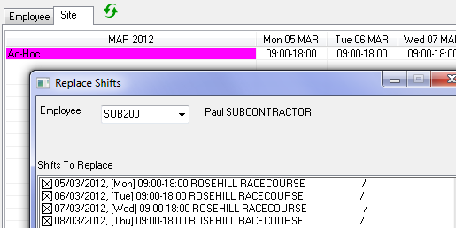
You can validate the shift costs by the usual double-click and check the Costs tab, howeve a more effective way to check multiple shifts is to run the pre-payroll report. Select the "Pre Payroll Report", leaving all other items as auto-selected:
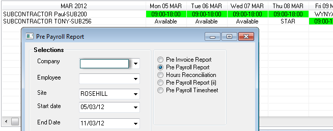
Produces a report which clearly shows that the pay rate is $28.00.
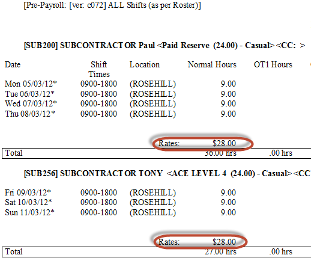
Top of Page
Verifying Employee details
The final step is to verify that the employees themselves are on pay rates other than $28.00 / hour. And, in checking you can see that one employee was raised from $15.00 / hour to $28.00, and the other was dropped from a normal rate of $30.00 / hour back to $28.00.
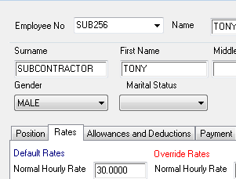
Top of Page
ALTERNATE approach to pay all shifts at $28.00
Whilst the previous definition is the optimal manner in which to define on-going charges at a site, you may have occassion where you need to pay &/or charge a specific rate for a day or short period.
In the create ad-hoc shifts process, you have the ability to set the pay classification parameters for the shift. The set value will then be used to over-write the pay class of the employee assigned to the shift.
- Open the scheduling workbench to the site at which you wish to create the adhoc shifts.
- In the create adhoc shifts form - enter the classification that the shifts are to be paid at.
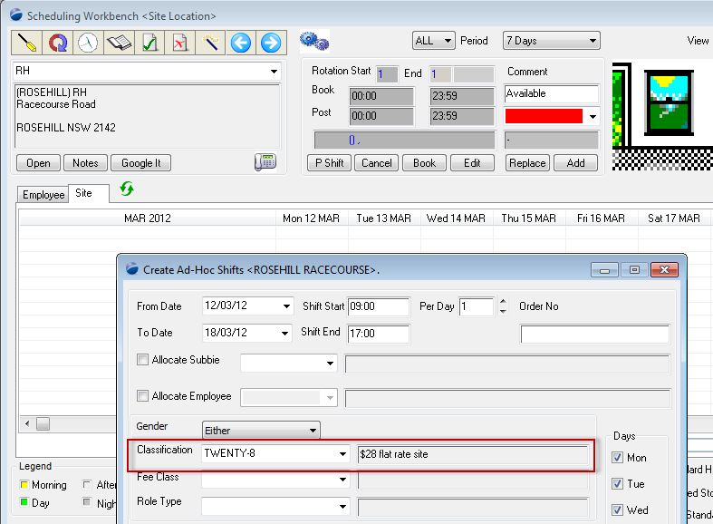
To verify that the shifts have been created as you expect, even before you assign an employee to the shift, open the shift and check the settings.
- The image confirms the details of your adhoc shift create process.
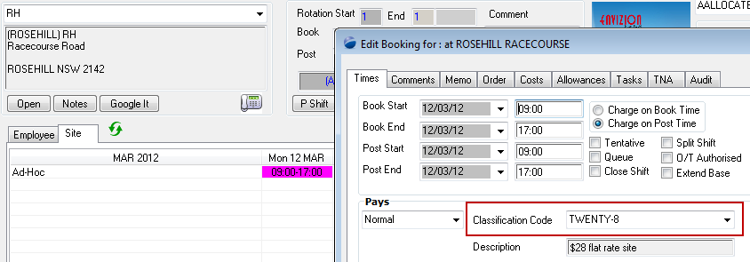
See Also
 PowerForce Controls PowerForce Controls
|